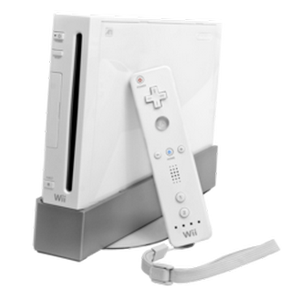
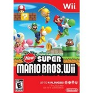
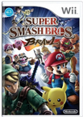
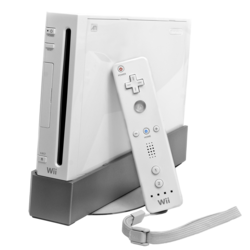
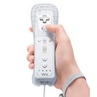
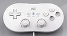
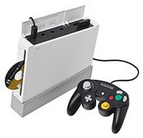
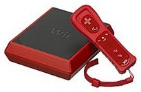

Wii
O Wii (/wiː/ WEE; conhecido não oficialmente como Nintendo Wii) é um console de videogame doméstico lançado pela Nintendo em 19 de novembro de 2006. Como console da sétima geração, o Wii competiu com o Xbox 360 da Microsoft e o PlayStation 3 da Sony. A Nintendo afirma que seu console tem como alvo um público mais amplo do que o dos outros dois. Desde o primeiro trimestre de 2006, o Wii liderou sua geração sobre o PlayStation 3 e o Xbox 360 em vendas mundiais, com mais de 101 milhões de unidades vendidas; em dezembro de 2009, o console quebrou o recorde de vendas por um único mês nos Estados Unidos.
O Wii introduziu o Wii Remote, que pode ser usado como um dispositivo apontador portátil e que detecta movimento em três dimensões. O console executa jogos armazenados em discos ópticos Wii. Ele também suportava o serviço WiiConnect24, agora descontinuado, que permitia ao Wii receber mensagens e atualizações pela Internet enquanto estava no modo de espera. Assim como os outros consoles de sétima geração, ele suportava um serviço, chamado "Virtual Console", que permitia aos jogadores baixar jogos emulados de consoles anteriores da Nintendo, suporte para streaming de vídeo online como o BBC iPlayer e outros serviços fornecidos pela Nintendo na Internet. A partir de 28 de junho de 2013, os serviços de Internet foram sendo interrompidos gradualmente; desde 31 de janeiro de 2019, apenas o re-download de jogos, a atualização do software do sistema e a transferência de dados entre o Wii e o Wii U continuavam disponíveis, até serem desativados em uma data futura não especificada. Os Wii Points não podiam mais ser comprados após março de 2018 e não podiam ser usados e foram perdidos permanentemente a partir de 31 de janeiro de 2019.
O Wii sucedeu o GameCube; os primeiros modelos são totalmente compatíveis com todos os jogos de GameCube e com a maioria dos acessórios. A Nintendo mencionou o console pela primeira vez na coletiva de imprensa da E3 2004 e depois o revelou na edição de 2005 do evento. O CEO da Nintendo, Satoru Iwata, revelou um protótipo do controle em setembro de 2005 na Tokyo Game Show. Na E3 2006, o console ganhou o primeiro de vários prêmios. Em 8 de dezembro de 2006, havia concluído seu lançamento nos quatro principais mercados.
Os modelos posteriores não são mais compatíveis com o Nintendo GameCube. A Nintendo lançou uma unidade revisada em 2011 na Europa, Austrália e América do Norte. O Wii Mini, o primeiro grande redesign de um console da Nintendo desde o Super Famicom Jr, foi lançado no Canadá em 7 de dezembro de 2012. O Wii Mini só pode reproduzir discos ópticos Wii, pois não possui compatibilidade com o GameCube e nem com recursos de rede; esse modelo não foi lançado no Japão, na Austrália ou na Nova Zelândia. O sucessor do Wii, o Wii U, foi lançado em 18 de novembro de 2012. Em outubro de 2013, a Nintendo confirmou que havia descontinuado a produção do Wii no Japão e na Europa.
História
Desenvolvimento
O console foi concebido em 2001, quando o Nintendo GameCube foi lançado. De acordo com uma entrevista com o designer de jogos da Nintendo, Shigeru Miyamoto, o conceito envolveu o foco em uma nova forma de interação do jogador. "O consenso era que o poder não é tudo para um console. Muitos consoles poderosos não podem coexistir. É como ter apenas dinossauros ferozes. Eles podem lutar e apressar sua própria extinção."
Em 2003, engenheiros e designers de jogos foram reunidos para desenvolver ainda mais o conceito. Em 2005, a interface do controle tinha ganhado forma, mas uma exibição pública naquele ano foi cancelada. Miyamoto afirmou que a empresa "tinha alguns problemas para resolver. Então decidimos não revelar o controle e, em vez disso, exibimos apenas o console". O presidente da Nintendo, Satoru Iwata, revelou mais tarde e demonstrou o Wii Remote na Tokyo Game Show de setembro daquele ano.
É dito que o Nintendo DS influenciou o design do Wii. O designer Ken'ichiro Ashida observou: "Tínhamos o DS em mente enquanto trabalhávamos no Wii. Pensamos em copiar a interface do painel de toque do DS e até criamos um protótipo". A idéia acabou sendo rejeitada por causa da noção de que os dois sistemas de jogos seriam idênticos. Miyamoto também afirmou: "[...] se o DS fracassasse, poderíamos ter levado o Wii de volta à prancheta". Em junho de 2011, a Nintendo lançou o protótipo do sucessor do Wii, conhecido como o Wii U.
Nome
O console era conhecido pelo codinome "Revolution" desde 11 de maio de 2004, quando seu nome de código foi anunciado na coletiva de imprensa da Nintendo pré-E3 2004 em Los Angeles, Califórnia, até 27 de abril de 2006, pouco antes da E3 daquele ano. Antes do anúncio do codinome do Wii, a mídia se referia ao console como "GCNext" ou Gamecube Next e "N5" ou o quinto maior console doméstico da Nintendo.
A ortografia da Nintendo para "Wii" (com dois caracteres minúsculos "i") tem a intenção de parecer duas pessoas lado a lado (representando jogadores se reunindo) e de representar o Wii Remote e Nunchuk. Um dos motivos que a empresa escolheu para esse nome desde o anúncio é:
“Wii soa como "nós", em inglês, que enfatiza que o console é para todos. Wii pode ser facilmente lembrado por pessoas ao redor do mundo, não importa o idioma que falam. Sem nenhuma confusão. Não há necessidade de abreviar. Apenas Wii.”
Alguns desenvolvedores de videogames e membros da imprensa afirmaram que preferiam o nome "Revolution" ao invés de "Wii". A revista Forbes expressou o medo "de que o nome transmitisse uma idéia de 'infantil' ao console". A BBC informou no dia seguinte ao anúncio do nome que "uma longa lista de piadas infantis, com base no nome", apareceram na Internet.A vice-presidente de assuntos corporativos da Nintendo of America, Perrin Kaplan, defendeu a escolha de "Wii" em vez de "Revolution" e respondeu aos críticos do nome, afirmando "viva com ele, durma com ele, coma com ele, siga em frente e espere que eles cheguem ao mesmo lugar." O presidente da Nintendo of America, Reggie Fils-Aimé, reconheceu a reação inicial e explicou ainda mais a mudança:
"Revolution como um nome não é ideal; é longo e, em algumas culturas, é difícil de pronunciar. Então, queríamos algo que fosse curto, direto ao ponto, fácil de pronunciar e distinto. Foi assim que o 'Wii', como nome do console, foi criado."
O Nintendo Style Guide refere-se ao console como "simplesmente Wii, não Nintendo Wii", tornando-o o primeiro console doméstico que a Nintendo comercializou fora do Japão sem o nome da empresa em sua marca registrada. O sucessor do Wii, o Wii U, também foi comercializado sem a Nintendo em seu nome, embora seu sucessor, o Nintendo Switch, tenha trazido de volta a empresa em seu nome.
Lançamento
Em 14 de setembro de 2006, a Nintendo anunciou as informações de lançamento para o Japão, América do Norte e do Sul, Oceania, Ásia e Europa, incluindo datas, preços e números projetados de distribuição de unidades. Foi anunciado que a maioria das remessas de 2006 seria destinada às Américas e 33 títulos estariam disponíveis em seu lançamento. O Wii foi lançado nos Estados Unidos em 19 de novembro de 2006 por US$ 249,99, e mais tarde foi lançado no Reino Unido em 8 de dezembro de 2006 por £179. O Reino Unido experimentou uma escassez generalizada de unidades de Wii em muitas lojas físicas e on-line e não conseguiu cumprir todas as pré-encomendas no seu lançamento. O Wii foi lançado na Coréia do Sul em 26 de abril de 2008, Taiwan em 12 de julho de 2008, e Hong Kong em 12 de dezembro de 2009.
Demografia
A Nintendo esperava atingir um público mais amplo com seu console do que o de outros da sétima geração. Em uma coletiva de imprensa de Dragon Quest IX: Sentinels of the Starry Skies, em dezembro de 2006, Satoru Iwata insistiu: "Não estamos pensando em lutar contra a Sony, mas em quantas pessoas podemos jogar. O que mais pensamos não é em sistemas portáteis, consoles, etc., mas queremos atrair novas pessoas para jogar." Isso se reflete na série de propagandas de televisão da Nintendo na América do Norte (dirigida pelo vencedor do Óscar Stephen Gaghan) e seus anúncios na Internet. Os slogans publicitários eram "Wii gostaria de jogar" e "Experimente uma nova maneira de jogar"; os anúncios começaram em 15 de novembro de 2006 e tinham um orçamento total de mais de US$ 200 milhões para o ano. As produções foram a primeira estratégia de publicidade ampla da Nintendo e incluíram um videoclipe de dois minutos, mostrando uma variedade de pessoas apreciando o sistema Wii: moradores de apartamentos urbanos, fazendeiros, avós e pais com seus filhos. A música nos anúncios era da música "Kodo (Inside the Sun Remix)", dos Yoshida Brothers. Uma reportagem do jornal britânico The People também afirmou que a rainha Elizabeth II do Reino Unido usou o console.
 O Wii original com o Wii Remote Desenvolvedor: Nintendo Integrated Research & Development Fabricante: Foxconn Tipo: Console de jogos eletrônicos 7° Geração LançamentoOriginal
Family Edition
Mini
Disponibilidade 2006–2013 (original) 2011–presente (Family Edition) 2013–presente (Mini)DescontinuadoGeral 20 de outubro de 2013 Original
Family Edition
Unidades vendidas: 101,63 milhões Mídia Wii Optical Disc GameCube Game Disc Distribuição digital CPU: 729 MHz IBM PowerPC "Broadway" Capacidade de armazenamento: 512 MB de memória flash Memória: 88 MB Exibição: Vídeo composto, S-Video, SCART Vídeo componente Gráficos: 243 MHz ATI "Hollywood (GPU)" Controladores: Wii Remote Wii Balance Board Controle do GameCube Nintendo DSConectividade: Wi-Fi IEEE 802.11 b/g Bluetooth 2 × USB 2.0 Adaptador LANServiços on-lineNintendo Wi-Fi Connection WiiConnect24 Wii Shop Channel Jogo mais vendido: Wii Sports 82,78 milhões |
Jogos
 Cópias de varejo de jogos são fornecidas em discos ópticos proprietários do Wii, do tipo DVD, que são embalados em caixas com instruções. Na Europa, as caixas têm um triângulo no canto inferior do lado da manga do papel. O triângulo é codificado por cores para identificar a região para a qual o título se destina e quais idiomas manuais estão incluídos. O console apresenta restrições de região: o software disponível em uma região pode ser reproduzido apenas no hardware dessa região.
Novos jogos das principais franquias da Nintendo (incluindo The Legend of Zelda, Super Mario, Pokémon e Metroid) foram lançados, além de muitos títulos originais e jogos desenvolvidos por third-parties. A Nintendo recebeu suporte de empresas como Ubisoft, Sega, Square Enix, Activision Blizzard, Electronic Arts e Capcom, com mais jogos sendo desenvolvidos para o Wii do que para o PlayStation 3 ou Xbox 360. A Nintendo também lançou a linha New Play Control!, uma seleção de jogos aprimorados do GameCube para o Wii com controles atualizados.
O serviço Virtual Console permite que os proprietários de Wii joguem jogos originalmente lançados para o Nintendo Entertainment System, Super Nintendo Entertainment System, Nintendo 64, Genesis/Mega Drive, SG-1000 e Master System da Sega, TurboGrafx-16/PC Engine da NEC, Neo Geo da SNK, Commodore 64 e jogos de arcade. Os jogos do Virtual Console eram distribuídos através do antigo Wii Shop Channel e salvos na memória flash interna do Wii ou em um cartão SD removível. Uma vez baixados, os jogos do Virtual Console podem ser acessados no Wii Menu (como canais individuais) ou em um cartão SD através do menu SD Card. Há também o Wii Homebrew Channel, que pode ser instalado explorando o Wii, permitindo ao proprietário executar aplicativos não autorizados criados a partir de código gerado pelo usuário.
O pacote de desenvolvimento de jogos Unity pode ser usado para criar jogos oficiais do Wii; no entanto, o desenvolvedor deve ser autorizado pela Nintendo para desenvolver programações para o console. Os jogos também devem ser aceitos pela empresa para serem vendidos.
Até 31 de dezembro de 2018, 920,66 milhões de jogos do Wii haviam sido vendidos em todo o mundo, e 104 títulos haviam ultrapassado a marca de um milhão de unidades em março de 2011. Wii Sports, o jogo de maior sucesso do console (que vem incluso com o Wii na maioria das regiões) vendeu 82,86 milhões de cópias em todo o mundo até 30 de setembro de 2018, superando Super Mario Bros. como o videogame mais vendido de todos os tempos em 2009. No entanto, em maio de 2019, Minecraft se tornou o videogame mais vendido de todos os tempos, tendo vendido 176 milhões de cópias. O jogo não incluso com o console mais vendido, Mario Kart Wii, vendeu 37,14 milhões de cópias em todo o mundo até 30 de setembro de 2018.
Just Dance 2020 da Ubisoft foi o último jogo à ser lançado para o sistema, 13 anos após o lançamento do Wii.
Hardware
O Wii era o menor console doméstico da Nintendo na época (o menor atualmente é o console híbrido Nintendo Switch); mede 44 mm de largura, 157 mm de altura e 215,4 mm de profundidade em sua orientação vertical, um pouco maior do que três caixas de DVD empilhadas juntas. O suporte incluído mede 55,4 mm de largura, 44 mm de altura e 225,6 mm de profundidade. O sistema pesa 1,2 kg, tornando-o o mais leve dos três principais consoles da sétima geração. O Wii pode ficar na posição horizontal ou na vertical. O prefixo para o esquema de numeração do sistema e suas peças e acessórios é "RVL-" para o seu nome de código, "Revolution".
A parte frontal do console possui uma iluminada unidade de mídia óptica de carregamento de slot, que aceita apenas discos ópticos Wii de 12 cm e discos de jogos de Nintendo GameCube de 8 cm. No entanto, as unidades vendidas na Coréia do Sul e as revisões posteriores do Wii não tem retrocompatibilidade com o GameCube.A luz azul no slot do disco acende brevemente quando o console é ligado e pulsa quando novos dados são recebidos através do WiiConnect24. Após a atualização (incluindo a 3.0), a luz do slot do disco é ativada sempre que um disco é inserido ou ejetado. Quando há informações sobre o WiiConnect24, a luz permanece apagada. A luz do slot do disco permanece apagada durante o jogo ou ao usar outros recursos. Duas portas USB estão localizadas na parte traseira do console. Um slot para cartão SD está localizado atrás da tampa do slot para cartão SD, na frente do console, onde um cartão SD pode ser inserido.
O pacote de lançamento do Wii inclui o console; um suporte para permitir que o console seja colocado verticalmente; um estabilizador redondo e transparente para o suporte principal; um Wii Remote; uma extensão Nunchuk; uma barra de sensores; um suporte removível para a barra; um adaptador de energia externo; duas pilhas AA; um cabo de áudio e vídeo composto com conectores RCA; um adaptador SCART nos países europeus (vídeo componente e outros tipos de cabos estão disponíveis separadamente); manual de instruções e uma cópia do jogo Wii Sports.
O leitor de discos do Wii não reproduz DVD-Video, DVD-Audio ou CDs. Um anúncio de 2006 afirmou que uma nova versão do Wii, capaz de reproduzir DVD-Video, seria lançada em 2007; no entanto, a Nintendo atrasou seu lançamento para se concentrar em atender à demanda pelo console original. O anúncio inicial da Nintendo afirmou que a implementação da capacidade "exigia mais do que uma atualização de firmware" e ela não poderia ser disponibilizada como uma opção de atualização para o Wii existente; o atraso mais tarde se tornou um cancelamento quando a produção do Wii foi descontinuada em 2013. No entanto, apesar da afirmação, terceiros usaram aplicações não autorizadas para adicionar reprodução de DVD à unidades Wii não modificadas. O Wii também pode ser hackeado para permitir que um proprietário use o console para atividades não autorizadas pelo fabricante. Várias marcas de modchips estão disponíveis para o Wii.
Embora a Nintendo tenha mostrado o console e o Wii Remote nas cores branca, preta, prata, verde-limão e vermelha antes de ser lançado, ele estava disponível apenas na cor branca nos primeiros dois anos e meio de vendas. Os consoles pretos foram disponibilizados no Japão em agosto de 2009, na Europa em novembro de 2009 e na América do Norte em 9 de maio de 2010. Um pacote com o console vermelho foi lançado no Japão em 11 de novembro de 2010, para comemorar o 25º aniversário de Super Mario Bros.. A versão européia do pacote com o Wii vermelho de edição limitada foi lançada em 29 de outubro de 2010, incluindo o jogo original Donkey Kong pré-carregado no console e uma cópia dos jogos New Super Mario Bros. Wii e Wii Sports. O pacote também possui o Wii Remote Plus, uma versão do Wii Remote com a tecnologia Wii Motion Plus integrada. O pacote vermelho do Wii foi lançado na América do Norte em 7 de novembro de 2010 com os jogos New Super Mario Bros. Wii, o Wii Sports e o controle Wii Remote Plus.
Em 11 de julho de 2007, a Nintendo apresentou o Wii Balance Board na E3 daquele ano com o Wii Fit. É um uma balança com sensores de pressão que permitem que o jogador faça várias atividades físicas, como cabecear bolas virtuais, yoga, esportes e ski.
Wii Remote

O Wii Remote é o controle principal do console. Ele usa uma combinação de acelerômetros internos e detecção por infravermelho para detectar sua posição no espaço 3D quando apontado para os LEDs na barra de sensores. Esse design permite que os usuários controlem o jogo com gestos físicos e pressionamentos de botão. O controle se conecta ao console usando Bluetooth com um alcance aproximado de 9,1 m (109 pés), e apresenta um ruído e um alto-falante interno. Uma pulseira de pulso acoplável pode ser usada para impedir que o jogador derrube (ou atire) acidentalmente o Wii Remote. Desde então, a Nintendo ofereceu uma cinta mais forte e o Wii Remote Jacket para fornecer aderência e proteção extras.
Os acessórios podem ser conectados a um Wii Remote através de uma entrada proprietária na base do controle, como o Nunchuk - uma extensão portátil com acelerômetro, controle analógico e dois botões adicionais. Um acessório de expansão conhecido como Wii MotionPlus aumenta os sensores existentes do Wii Remote com giroscópios para permitir uma melhor detecção de movimento; a funcionalidade MotionPlus foi posteriormente incorporada à uma revisão do controlador conhecida como Wii Remote Plus. Na E3 2009, a Nintendo também apresentou um acessório denominado "Vitality Sensor" que poderia ser usado para medir o pulso de um jogador. Em uma sessão de perguntas e respostas de 2013, Satoru Iwata revelou que o Vitality Sensor havia sido arquivado, pois testes internos descobriram que o dispositivo não funcionava com todos os usuários, e seus casos de uso eram muito limitados.
O Classic Controller é outra extensão do Wii Remote e é mais parecido com os controles clássicos. Os jogadores podem usá-lo com jogos do Virtual Console, além de jogos projetados para o Wii.
Armazenamento
O console Wii contém 512 megabytes de memória flash interna não removível, e possui um slot para cartão SD para armazenamento externo. Um cartão SD pode ser usado para fazer upload de fotos e backup de dados de jogos salvos e jogos baixados do Virtual Console e WiiWare. Para transferir jogos salvos para o cartão SD, é necessário instalar uma atualização. A instalação pode ser iniciada no menu de opções do Wii, por meio de uma conexão com a Internet ou pela inserção de um disco de jogo contendo a atualização. Os dados do Virtual Console não podem ser restaurados para nenhum sistema, exceto a unidade de origem. Um cartão SD também pode ser usado para criar músicas personalizadas no jogo a partir de arquivos MP3 armazenados (como mostrado pela primeira vez no jogo Excite Truck) e músicas para o recurso de apresentação de slides do Photo Channel. A versão 1.1 do Photo Channel removeu a reprodução de MP3 em favor do suporte ao formato AAC.
Na coletiva de imprensa da Nintendo Fall em outubro de 2008, Satoru Iwata anunciou que os proprietários do Wii teriam a opção de baixar o conteúdo do WiiWare e do Virtual Console diretamente em um cartão SD. A opção ofereceria uma alternativa para "resolver o problema de armazenamento insuficiente de memória do console". O anúncio afirmou que essa funcionalidade estaria disponível no Japão na primavera de 2009; a Nintendo disponibilizou a atualização em 25 de março. Além do recurso anunciado anteriormente, a atualização também permitiu que os usuários jogaassem jogos diretamente de um cartão SD. Na realidade, os dados do canal são copiados para o Wii e permanecem até que o canal saia. A versão 2.0 do Wii permitiiu que os canais fossem armazenados em um cartão SD, mas eles precisavam ser copiados manualmente. A atualização também adicionou suporte para cartões SDHC de até 32 GB de armazenamento.
Especificações Técnicas
A Nintendo divulgou alguns detalhes técnicos sobre o Wii, mas alguns fatos importantes vazaram pela imprensa. Embora nenhum desses relatórios tenha sido oficialmente confirmado, eles indicam que o console é uma extensão (ou avanço) da arquitetura do Nintendo GameCube. Especificamente, as análises relatam que o Wii é aproximadamente 1,5 a 2 vezes mais poderoso que seu antecessor. Com base nas especificações, o Wii foi considerado o menos potente entre os principais consoles domésticos de sua geração.
Processadores
- CPU: IBM PowerPC "Broadway", com tecnologia SOI CMOS de 90nm com 729 MHz
- GPU: ATI "Hollywood", feito com CMOS de 90 nm com 243 MHz
Nenhuma das frequências dos processadores foram confirmadas pela Nintendo, IBM ou ATI.
Memória
- 88 MB de memória primária (24 MB interno de 1T-Sram e 64 MB GDDR3 SDRAM externo)
- 3 MB de memória de texturas e framebuffer
Capacidades e entradas
- 4 Wii Remote (conectados via Bluetooth)
- Quatro entradas para controles de Nintendo GameCube
- Dois slots para cartão de memória do Nintendo GameCube
- Slot de cartão SD (suporta cartões SDHC à partir da atualização de sistema 4.0 ou posterior)
- Duas entradas USB 2.0
- Uma porta para a Barra de Sensores
- Entrada proprietária na base do Wii Remote para acessórios
- Teclado USB opcional ao quadro de mensagens, Wii Shop Channel e Internet Channel (disponível apenas na atualização de sistema 3.0 ou posterior)
- Módulo de rede Wi-fi 802.11b/g Mitsumi DWM-W004
- Compatível com um acessório opcional que ao se conectar na porta USB 2.0, permite ao usuário usar uma conexão de internet com fio.
- Saída múltipla de áudio e vídeo (veja a seção "Vídeo")
Armazenamento
- Memória flash interna de 512 MB.
- Armazenamento expansível através de cartões SD e SDHC (de até 32 GB)
- Cartões de memória de Nintendo GameCube (exigidos para salvar dados de jogos de GameCube)
- Unidade de mídia óptica de carregamento de slot, compatível com discos ópticos Wii de 12 cm e discos de jogos de Nintendo GameCube de 8 cm
- Memória ROM fabricada pela Macronix
Vídeo
- Saída múltipla de áudio e vídeo com suporte à vídeo composto componente, S-Video (funcionalidade disponível apenas para consoles programados para o sistema NTSC) e RGB SCART (suporte disponível apenas para consoles programados para o sistema PAL)
- Suporte às resoluções 480i (PAL/NTSC), 480p (PAL/NTSC) e 576i e proporções de 4:3 e 16:9
Áudio
- Principal: Estéreo – Dolby Pro Logic II
- Wii Remote: alto-falante embutido
- Áudio DSP
Consumo de energia
- 18 Watts enquanto está ligado
- 9.6 Watts no modo stand-by com o WiiConnect24 ligado
- 1.3 Watts no modo stand-by
Problemas técnicos
A primeira atualização de software do sistema do console (via WiiConnect24) fez com que um pequeno número de unidades no lançamento se tornasse completamente inutilizável. Isso forçou os usuários a enviar suas unidades para a Nintendo para reparos (se desejassem manter seus dados salvos) ou trocá-los por unidades gratuitas.
Com o lançamento dos discos ópticos Wii de camada dupla, a Nintendo of America afirmou que alguns sistemas Wii poderiam ter dificuldade em ler o software de alta densidade (devido à uma lente a laser contaminada). A Nintendo oferece kits de limpeza de lentes e reparos gratuitos no console para proprietários que enfrentarem esse problema.
O Wii Remote pode perder o rastreamento do console em que foi configurado, exigindo que seja redefinido e ressincronizado. O site de suporte da Nintendo fornece instruções para esse processo e solução de problemas relacionados.
Recursos
O console possui vários recursos internos disponibilizados a partir de seus componentes de hardware e firmware. O hardware permite a capacidade de expansão (através das portas de expansão), enquanto o firmware (e alguns softwares) pode receber atualizações periódicas através do serviço WiiConnect24.
Wii Menu
A interface do Wii Menu foi projetada para imitar canais de televisão. Canais separados são exibidos graficamente em uma grade e navegados usando o apontador do Wii Remote. Emenxceto pelo Disc Channel, é possível mover os canais pressionando os botões A e B para "agarrar" os canais e movê-los. Existem seis canais principais: Disc Channel, Mii Channel, Photo Channel, Wii Shop Channel, Forecast Channel e News Channel. Os dois últimos estavam inicialmente indisponíveis no lançamento, mas posteriormente foram ativados nas atualizações. O Wii + Internet Video Channel foi pré-instalado em todos os consoles Wii a partir de outubro de 2008. Canais adicionais estão disponíveis para download no Wii Shop Channel através do WiiWare e aparecem com cada título do Virtual Console; estes incluem os canais Everybody Votes Channel, Internet Channel, Check Mii Out Channel e o Nintendo Channel.
Retrocompatibilidade
O primeiro modelo do Wii possuía portas para os controles e cartões de memória de Nintendo GameCube para fornecer a retrocompatibilidade.
Os consoles Wii com o design original são compatíveis com todos os jogos, cartões de memória e controles de Nintendo GameCube. A compatibilidade com os jogos é obtida pela capacidade da unidade de carregamento de slots de aceitar os discos de jogos de Nintendo GameCube. No entanto, os modelos revisados RVL-101 e Wii Mini não tem nenhuma retrocompatibilidade com jogos de plataformas anteriores.
Um console Wii executando um jogo de GameCube está restrito às funcionalidades do GameCube, e um controle de GameCube é necessário para jogar os títulos do GameCube. Também é necessário um cartão de memória do Nintendo GameCube para salvar o progresso e o conteúdo do jogo, pois a memória flash interna do Wii não salva os dados dos jogos do GameCube. Além disso, a compatibilidade com versões anteriores é limitada em algumas áreas. Por exemplo, recursos on-line para títulos do Nintendo GameCube não podem ser usados no Wii, pois o console não possui portas seriais para o adaptador de banda larga e modem de Nintendo GameCube.
Conectividade com o Nintendo DS
O Wii suporta conectividade sem fio com o Nintendo DS sem nenhum acessório adicional. Essa conectividade permite que o jogador use o microfone e a tela sensível ao toque do Nintendo DS como entradas para jogos do Wii. O primeiro jogo que utilizou essa conectividade foi Pokémon Battle Revolution. Jogadores com o jogo Pokémon Diamond e Pearl de Nintendo DS podem jogar batalhas usando o Nintendo DS como controle. Final Fantasy Crystal Chronicles: Echoes of Time, lançado para Nintendo DS e Wii, apresenta conectividade na qual ambos os jogos podem avançar simultaneamente. Mais tarde, a Nintendo lançou o Nintendo Channel, que permite aos proprietários do Wii baixarem demos de jogos ou dados adicionais para o Nintendo DS em um processo semelhante ao de uma DS Download Station. O console também é capaz de expandir os jogos do Nintendo DS.
Conectividade online
O console Wii se conecta à Internet através de seu módulo de rede Wi-Fi 802.11b/g embutido ou através de um adaptador USB-Ethernet; qualquer método permite que os jogadores acessem o serviço Nintendo Wi-Fi Connection. O serviço possui vários recursos para o console, incluindo o Virtual Console, o WiiConnect24, o Internet Channel, o Forecast Channel, o Everybody Votes Channel, o News Channel e o Check Mii Out Channel. O Wii também pode se comunicar (e se conectar) com outros consoles Wii através de uma rede sem fio auto-gerada, permitindo a reprodução sem fio local em diferentes aparelhos de televisão. Battalion Wars 2 demonstrou pela primeira vez esse recurso para a reprodução múltipla de tela não dividida entre duas (ou mais) televisões.
Suporte à mídia
Em 9 de abril de 2008, a BBC anunciou que o seu serviço de streaming BBC iPlayer estaria disponível no Wii pelo navegador do Internet Channel; no entanto, alguns usuários tiveram dificuldades com o serviço. Em 18 de novembro de 2009, o BBC iPlayer no Wii foi lançado como o BBC iPlayer Channel, um canal para download gratuito do Wii Shop Channel; no entanto, o serviço foi descontinuado no início de 2017.
A Netflix foi lançada como um canal para download do Wii em 18 de outubro de 2010 nos Estados Unidos. Uma pesquisa conduzida pela Nielsen revelou que 25% dos assinantes da Netflix usavam o serviço de streaming no Wii em julho de 2011.
A Hulu anunciou em outubro de 2011 que lançaria o serviço de streaming Hulu Plus no Wii e no Nintendo 3DS. O Hulu Plus foi lançado em 16 de fevereiro de 2012 como um canal para download do Wii.
O YouTube foi lançado como um canal para download no Wii em 15 de dezembro de 2012 nos Estados Unidos. O canal do YouTube para o Wii foi descontinuado em 28 de junho de 2017 como parte do plano do YouTube de eliminar progressivamente a disponibilidade em dispositivos mais antigos.
O Prime Video, serviço de streaming da Amazon, foi lançado em 14 de janeiro de 2013 como um canal para download do Wii.
O Crunchyroll, um serviço de streaming de animes, foi lançado em outubro de 2015 como um canal para download do Wii.
Em 2018, a Netflix anunciou que a Nintendo encerraria o suporte à Netflix no Wii à partir de fevereiro de 2019.
Controle dos pais
O console possui restrições de recursos, que podem ser usados para proibir usuários mais jovens de jogar jogos com conteúdo inadequado para a sua faixa etária. Quando alguém tenta jogar um jogo de Wii ou Virtual Console, ele lê a classificação do conteúdo codificado nos dados do jogo; se essa classificação for maior que a faixa etária definida pelo sistema, o jogo não será carregado sem uma senha. O controle dos pais também pode restringir o acesso à Internet, o que bloqueia o Internet Channel e os recursos de atualização do sistema. Como o console está restrito às funcionalidades de GameCube ao reproduzir discos de jogos deste console, o jogo de GameCube não é afetado pelas configurações de controle dos pais do Wii.
Os consoles fabricados na Europa usam principalmente o sistema de classificação PEGI, enquanto as unidades norte-americanas usam o sistema de classificação ESRB. O Wii dá suporte aos sistemas de classificação de muitos países, incluindo CERO no Japão, USK na Alemanha, PEGI e BBFC no Reino Unido, ACB na Austrália e OFLC na Nova Zelândia. Os desenvolvedores de Homebrew desenvolveram uma engenharia reversa da função que a Nintendo usa para recuperar senhas perdidas de controle dos pais, criando um script simples para obter códigos de redefinição do controle dos pais.
Recepção
O Wii recebeu críticas geralmente positivas. O sistema foi bem recebido após sua exibição na E3 2006. No evento, o console da Nintendo ganhou o Game Critics Awards por o Melhor do Show e Melhor Hardware. Na edição de dezembro de 2006 da Popular Science, o console foi nomeado vencedor do grande prêmio em entretenimento doméstico. A Spike Video Game Awards citou a tecnologia inovadora do Wii. A GameSpot escolheu o console como tendo o melhor hardware em seus prêmios "Melhores e Piores de 2006". O sistema também foi escolhido como um dos 20 produtos mais inovadores da revista PC World. O console recebeu um joystick de ouro na categoria Inovação do Ano de 2007 na Golden Joystick Awards. Na categoria de Engenharia e Tecnologia para criação e implementação de videogames e plataformas, a Nintendo recebeu um Emmy Award por Inovação em Controle de Videogame pela Academia Nacional de Artes e Ciências Televisivas. Em 2009, a IGN nomeou o Wii como o 10º maior console de todos os tempos (de uma lista com 25 consoles).
O sucesso do Wii pegou third-parties de surpresa, levando a desculpas pela qualidade de seus primeiros jogos. Em uma entrevista à revista alemã Der Spiegel, Yves Guillemot e Alain Corre, da Ubisoft, admitiram que cometeram um erro ao esgotar seus títulos de lançamento, prometendo levar mais a sério os projetos futuros. A Take-Two Interactive, que lançou alguns jogos para o GameCube, mudou sua posição em relação à Nintendo, dando uma prioridade maior ao Wii.
Ao mesmo tempo, surgiram críticas às especificações técnicas do Wii Remote e do Wii. O ex-editor da GameSpot e fundador da Giantbomb.com, Jeff Gerstmann, afirmou que o alto-falante do controle produzia som de baixa qualidade, enquanto que o presidente da Factor 5, Julian Eggebrecht, criticou o áudio do hardware como desclassificado para um console de sua geração. A desenvolvedora britânica Free Radical Design afirmou que o hardware do Wii não possuía a energia necessária para executar o software que estava programado para ser lançado em outros consoles da sétima geração. A conectividade online do Wii também foi criticada; Matt Casamassina, da IGN, comparou-o com o serviço "totalmente não intuitivo" fornecido para o Nintendo DS.
O designer de jogos e criador de The Sims, Will Wright, compartilhou suas opiniões sobre o Wii no contexto da sétima geração de consoles: "O único sistema da próxima geração que eu vi é o Wii - o PS3 e o Xbox 360 parecem versões melhores do último, mas praticamente o mesmo jogo com melhorias incrementais. Mas o Wii parece um grande salto - não que os gráficos sejam mais poderosos, mas que atinja um público completamente diferente."
O Wii é visto como mais exigente fisicamente do que outros consoles de videogames. Alguns jogadores do Wii experimentaram uma forma de epicondilite, conhecida como "Wiiitis". Um estudo publicado no British Medical Journal afirmou que os jogadores do Wii gastam mais energia do que quando jogam jogos sedentários de computador. Embora esse aumento de energia possa ser benéfico para o controle do peso, ele não é um substituto adequado para exercícios regulares. Um estudo de caso publicado no jornal da American Physical Therapy Association, Physical Therapy, focou no uso do Wii para reabilitação em um adolescente com paralisia cerebral. Acredita-se que seja a primeira pesquisa publicada demonstrando os benefícios da fisioterapia com o uso do sistema de jogo. Os pesquisadores dizem que o sistema complementa as técnicas tradicionais através do uso de esforços de reabilitação simultânea em jogos. Em maio de 2010, a American Heart Association (AHA) endossou o Wii para incentivar as pessoas sedentárias a dar o primeiro passo em direção à aptidão. O ícone do coração da AHA cobre o console e dois de seus jogos mais ativos, o Wii Fit Plus e o Wii Sports Resort.
Em 2008, dois anos após o lançamento do Wii, a Nintendo reconheceu várias limitações e desafios com o sistema (como a percepção de que o sistema atendia principalmente à um público "casual" e era impopular entre os jogadores "hardcore"). O designer de jogos Shigeru Miyamoto admitiu que a falta de suporte à saída de vídeo de alta definição no Wii e sua conectividade online limitada também contribuiu para que o sistema fosse considerado separadamente dos sistemas de seus concorrentes, o Xbox 360 e o PlayStation 3. Miyamoto originalmente defendeu a decisão da Nintendo de não incluir gráficos HD no Wii, afirmando que o número de televisões com suporte à alta definição nas casas das pessoas na época "ainda não era tão alto assim. É claro que acho que, daqui à cinco anos, seria praticamente certo que a Nintendo criaria um sistema com suporte à alta definição, mas no momento, o tipo de aparelho de TV predominante no mundo é o que não tem suporte à HD." Miyamoto disse em uma entrevista à revista japonesa 4Gamer em 2013 que se arrependeu de não ter fornecido os gráficos do Wii em HD.
Um executivo da Frontline Studios afirmou que as principais publicadoras de jogos eletrônicos estavam preocupadas em lançar títulos exclusivos para o Wii, devido à percepção de que as third-parties não eram fortemente apoiadas pelos consumidores. Em seu blog, Jeremy Parish, editor do 1UP.com, afirmou que a Nintendo foi a maior decepção para ele em 2007. Comentando a falta de suporte de desenvolvedoras terceirizadas, ele afirmou que "o cenário do Wii é sombrio. Pior do que era no Nintendo 64. Pior do que no GameCube... o conteúdo vindo das third-parties é predominantemente lixo". Os jornais The Globe and Mail e Forbes observaram que o Wii tinha poucos títulos de terceiros bem-sucedidos em comparação com seus rivais (devido, em parte, ao seu hardware mais fraco). As third-parties frequentemente deixavam o Wii de lado em vez de criar jogos para os três consoles simultaneamente ("sucessos de vendas como a franquia Call of Duty nunca chegaram ao hardware da Nintendo ou eram mostrados de forma neutra"). A Forbes observou que dos jogos mais bem-sucedidos de 2011 (The Elder Scrolls V: Skyrim, Mass Effect 3, Portal 2, LA Noire, Battlefield 3, Call of Duty: Modern Warfare 3), embora todos tenham sido lançados para PC, Xbox 360, e PlayStation 3, apenas Modern Warfare 3 recebeu uma versão para Wii, que também foi o port menos vendido do jogo. A falta de jogos de terceiros poderia ser exacerbada no futuro, já que a Nintendo enfrentava o "dilema de ter ficado fora de sincronia com seus rivais no ciclo do console"; a Microsoft e a Sony projetariam seus consoles para serem mais poderosos que o Wii U. Fortes títulos de third-parties são vistos como um sinal fundamental da saúde de um console de videogames.
O jornal The Globe and Mail, ao sugerir o porquê da Nintendo ter registrado uma perda recorde de US$ 926 milhões nos seis primeiros meses do ano fiscal de 2011–2012, culpou o design do Wii por ser "míope". O Wii inicialmente teve um sucesso fenomenal porque era barato (devido à ser menos sofisticado do que seus concorrentes) e introduziu um "truque de jogo". No entanto, essa abordagem fez com que o hardware do Wii logo se tornasse obsoleto e não pudesse continuar a longo prazo (em contraste com rivais mais avançados, como Xbox 360 e PlayStation 3, que deveriam continuar se saindo bem em 2012-2013) "como os desejos dos usuários e as tecnologias vizinhas evoluíram" mais tarde na geração. Além disso, a redução de preços e a introdução de controles com sensor de movimento para o Xbox 360 e PS3 anularam as vantagens que o Wii mantinha. The Globe sugeriu que haviam outras razões para o fraco desempenho financeiro da Nintendo, incluindo um iene forte e uma recepção morna ao console de videogames portátil Nintendo 3DS, à medida que os jogos para dispositivos móveis se tornaram populares em smartphones e tablets, como o iPad.
Vendas
Desde o seu lançamento, os números de vendas mensais do console eram geralmente mais altos do que seus concorrentes em todo o mundo. Em 28 de novembro de 2006, a Nintendo informou que havia vendido mais de 600.000 consoles nos primeiros oito dias de lançamento nas Américas, tornando-se o maior lançamento de um console da Nintendo até o lançamento do Nintendo Switch em 2017. O Japão recebeu inicialmente 400.000 consoles Wii, e vendeu cerca de 372.000 unidades em dois dias, com Wii Sports e Wii Play sendo os jogos mais vendidos. A Nintendo anunciou em 13 de dezembro de 2006 que foram vendidas 325.000 unidades do console na Europa nos primeiros dois dias de disponibilidade e 33.000 unidades na Austrália nos primeiros seis dias de disponibilidade, tornando-o o console de venda mais rápida em todo o continente europeu e o maior lançamento de um sistema de videogame na Austrália. Até o final de 2006, o foram vendidas 3,19 milhões de unidades do console em todo o mundo.
De acordo com o NPD Group, o Wii vendeu mais unidades nos Estados Unidos do que o Xbox 360 e o PlayStation 3 juntos no primeiro semestre de 2007. Essa liderança foi ainda maior no mercado japonês, onde liderou as vendas totais (tendo vendido os dois consoles por fatores de 2:1 à 6:1 quase todas as semanas desde seu lançamento até novembro de 2007). Na Austrália, o Wii quebrou o recorde estabelecido pelo Xbox 360 e se tornou o console de jogos mais vendido na história australiana, vendendo 32.901 unidades nos primeiros quatro dias após o lançamento do console. Ele também quebrou o recorde australiano do console da Microsoft pela quantidade mais rápida de tempo para vender 100.000 unidades, atingindo a marca dentro de seis meses e duas semanas. O Wii se tornou o console de venda mais rápida do Reino Unido na época, vendendo 1 milhão de unidades em apenas 38 semanas após o lançamento.
Em 12 de setembro de 2007, o jornal Financial Times informou que o Wii havia ultrapassado o Xbox 360 (lançado um ano antes) e se tornara o líder de vendas de consoles domésticos da sétima geração, com base nos números de vendas da Enterbrain, NPD Group e GfK. Foi a primeira vez que um console da Nintendo liderou sua geração em vendas desde o Super Nintendo Entertainment System.
Em 11 de julho de 2007, a Nintendo alertou que o Wii permaneceria escasso durante todo o ano civil. Em dezembro, Reggie Fils-Aimé revelou que a Nintendo produzia aproximadamente 1,8 milhão de consoles Wii por mês. Algumas lojas do Reino Unido ainda sofriam com a escassez de consoles em março de 2007, a demanda ainda ultrapassava a oferta nos Estados Unidos em junho de 2007, e o console estava "esgotando quase tão rapidamente quanto chega às lojas" no Canadá em abril de 2008. Em outubro de 2008, a Nintendo anunciou que, entre outubro e dezembro, as remessas norte-americanas do Wii aumentariam consideravelmente em relação aos níveis de 2007, enquanto produzia 2,4 milhões de unidades do Wii por mês em todo o mundo (em comparação com as 1,6 milhão por mês em 2007).
Nos Estados Unidos, até 1º de julho de 2008, foram vendidas 10,9 milhões de unidades de consoles Wii, tornando-o o líder em vendas de console de sétima geração, de acordo com o NPD Group (superando o Xbox 360).
No Japão, as vendas do Wii superaram o número de consoles GameCube vendidos em janeiro de 2008; foram vendidas 7.526.821 unidades até dezembro de 2008, segundo a Enterbrain. De acordo com o NPD Group, o Wii ultrapassou o Xbox 360 e se tornou o console de videogame doméstico de "próxima geração" mais vendido no Canadá (com 813.000 unidades vendidas até 1º de abril de 2008), e foi o console doméstico mais vendido por 13 dos 17 meses anteriores. De acordo com o NPD Group, foram vendidas 1.060.000 unidades do console no Canadá até agosto de 2008, tornando-o o primeiro console doméstico da sétima geração a superar a marca de um milhão de unidades naquele país. No Reino Unido, o Wii lidera as vendas de console doméstico de sétima geração com 4,9 milhões de unidades vendidas até 3 de janeiro de 2009, de acordo com o GfK Chart-Track. Em 25 de março de 2009 na Game Developers Conference, Satoru Iwata disse que os envios mundiais de Wii haviam chegado a 50 milhões. De acordo com a GfK Australia, foram vendidos 500.000 consoles Wii na Austrália dentro de 84 semanas após seu lançamento, superando o PlayStation 2 e o DS como o sistema mais rápido a acumular 500.000 vendas no país.
Embora a Microsoft e a Sony tenham sofrido perdas na produção de seus consoles na esperança de obter lucro à longo prazo nas vendas de software, a Nintendo supostamente otimizou os custos de produção para obter uma margem de lucro significativa com cada unidade do Wii vendida. Em 17 de setembro de 2007, o jornal Financial Times informou que o lucro direto por cada Wii vendido podia variar, de US$ 13 no Japão à US$ 49 nos Estados Unidos e US$ 79 na Europa. Em 2 de dezembro de 2008, a revista Forbes informou que a Nintendo obteve um lucro operacional de US$ 6 por cada unidade vendida do Wii.
Em 23 de setembro de 2009, a Nintendo anunciou suas primeiras reduções de preço para o console. A Nintendo vendeu mais de três milhões de consoles Wii nos EUA até dezembro de 2009 (estabelecendo um recorde regional para o mês e encerrando nove meses de queda nas vendas), devido ao corte de preços e lançamentos de jogos como New Super Mario Bros. Wii. Em 31 de janeiro de 2010, o Wii se tornou o console de videogame doméstico mais vendido, produzido pela Nintendo, com vendas de mais de 67 milhões de unidades (superando as do Nintendo Entertainment System).
Em 2010, as vendas do Wii começaram a cair, caindo 21% em relação ao ano anterior. As vendas continuaram a diminuir em 2011, com a receita trimestral da Nintendo caindo 41%. Apesar da desaceleração nas vendas, a Nintendo informou que, na Black Friday de 2011, foram vendidos mais de 500.000 consoles Wii, tornando-a a Black Friday de maior sucesso na história do console. As vendas do Wii caíram ainda mais em 2012, tendo diminuído pela metade em relação a 2011. O Wii Mini vendeu 35.700 unidades nos dois primeiros meses de disponibilidade no Canadá, após ser lançado em 7 de dezembro de 2012.
O Wii superou 100 milhões de unidades vendidas em 31 de julho de 2013, vendendo 210.000 unidades entre os meses de abril e junho do mesmo ano.
Ações Judiciais
A Lonestar Inventions, L.P., uma empresa sediada no Texas, processou a Nintendo em junho de 2006, alegando que a empresa copiou um dos projetos de capacitores patenteados da Lonestar e o usou no console Wii. As duas empresas concordaram em rejeitar todas as reivindicações em 20 de julho de 2009, juntamente com um acordo firmado entre a Lonestar e a AMD, que fornecia a tecnologia de microprocessador da Nintendo; se a destituição da Lonestar-Nintendo incluía termos de acordo extrajudicial não é claro.
A Anascape Ltd, uma empresa sediada no Texas, entrou com um processo no verão de 2006 contra a Nintendo por violação de patente referente ao feedback vibracional usado pelos controles da Nintendo. Um veredito de julho de 2008 proibiu a Nintendo de vender o Classic Controller nos Estados Unidos, além dos controles de GameCube. Após recorrer ao Tribunal de Apelação para o Circuito Federal dos Estados Unidos, em 22 de abril de 2010, o Tribunal do Circuito Federal decidiu a favor da Nintendo.
A Interlink Electronics Inc. entrou com um processo de violação de patente contra a Nintendo em dezembro de 2006 devido à funcionalidade apontadora do Wii Remote, alegando "perda de royalties razoáveis, vendas reduzidas e/ou lucros perdidos como resultado das atividades infratoras" da Nintendo. O processo foi julgado improcedente pela Interlink em março de 2007.
Em agosto de 2008, a Hillcrest Laboratories Inc. registrou uma reclamação contra a Nintendo na Comissão de Comércio Internacional dos EUA, alegando que o Wii Remote violou três de suas patentes. Uma quarta patente da Hillcrest (para interfaces gráficas exibidas nas telas de televisão) também foi supostamente violada. Hillcrest solicitou a proibição de consoles Wii importados para os EUA. Em 24 de agosto de 2009, a Nintendo e a Hillcrest chegaram a um acordo, embora os termos não tenham sido divulgados publicamente.
Em novembro de 2008, a Motiva LLC entrou com uma ação contra a Nintendo na Comissão de Comércio Internacional dos EUA, alegando que o Wii violou duas de suas patentes por rastrear movimentos e posições do corpo. A Comissão decidiu em favor da Nintendo em janeiro de 2013, alegando que "o litígio da Motiva era voltado para ganhos financeiros, não para incentivar a adoção da tecnologia patenteada por ela" e que "simplesmente não há uma probabilidade razoável de que, após um litígio bem-sucedido contra a Nintendo, a tecnologia patenteada pela Motiva teria sido licenciada por parceiros que a teriam incorporado.” A Comissão também determinou que a Nintendo não violou nenhuma das patentes da Motiva.
Em setembro de 2011, a ThinkOptics Inc. entrou com uma ação contra a Nintendo no Tribunal Distrital dos Estados Unidos do Distrito Leste do Texas por causa de seu controle, o Wavit Remote, alegando que o Wii violou sua patente para um "sistema de apontamento absoluto baseado em visão portátil", um "dispositivo portátil para sistema de apontamento absoluto baseado em visão portátil" e "sistema de apontador absoluto baseado em visão portátil", que constituem a base do Wavit Remote. Eles também disseram que o Wii U também infringe suas patentes e afirmaram que a Nintendo estava ciente do fato de que o Wii supostamente viola as patentes da ThinkOptics. O processo buscou uma liminar contra a violação de produtos, royalties, honorários advocatícios e danos por lucros cessantes. O processo foi julgado improcedente pela ThinkOptics em agosto de 2014.
A partir de dezembro de 2012, a iLife Technologies Inc. processou várias grandes empresas por violação de patentes por causa de um conjunto de patentes que possuíam relacionadas a "sistemas e métodos para avaliar o movimento de um corpo em relação a um ambiente", principalmente voltado para a área médica; A Nintendo foi processada pela iLife em dezembro de 2013 por violação do Wii Remote em suas patentes, com o processo buscando US$ 144 milhões em danos, com base em uma multa de US$ 4 pelas 36 milhões de consoles Wii vendidos até então. Um julgamento foi feito em agosto de 2017, e o júri decidiu a favor da iLife Technologies e a Nintendo foi forçada a pagar US$ 10 milhões em danos. Enquanto a Nintendo recorreu dessa decisão, a Corte de Apelações dos Estados Unidos confirmou a decisão do júri em dezembro de 2017. Um juiz federal anulou a decisão em janeiro de 2020, determinando que a patente da iLife era muito ampla.
Correias de pulso
Em meados de dezembro de 2006, o escritório de advocacia Green Welling LLP entrou com uma ação coletiva contra a Nintendo por suas "correias de pulso com defeito". Poucos dias depois, a Nintendo emitiu um recall de produto para as pulseiras e lançou uma nova versão da mesma com um mecanismo de segurança aprimorado para o pulso, levando o processo à ser retirado um tempo depois.
Um segundo processo de ação coletiva foi aberto por uma mãe no estado americano do Colorado em dezembro de 2008, alegando que as pulseiras de pulso atualizadas ainda eram ineficazes. Esse processo foi indeferido em setembro de 2010, constatando para a Nintendo que as alças de pulso não estavam intencionalmente defeituosas sob as leis de proteção ao consumidor do Colorado.
Marcas registradas
Em 2000, o termo "Weemote" foi registrado pela fabricante de controles remotos para TV sediada em Miami, Fobis Technologies, e mais tarde foi usado como o nome de seu controle remoto projetado para crianças pequenas. Embora escrito de forma diferente, "Weemote" é pronunciado da mesma forma que "Wiimote", o termo não oficial do Wii Remote. As vendas do Weemote, que totalizaram menos de um milhão em 2008, caíram devido à confusão com o Wiimote. A Fobis Technologies afirma que "Wiimote" é uma violação de marca registrada, mas a Nintendo não usa oficialmente esse termo, embora muitos varejistas o usem. A Fobis enviou até 100 cartas de cease and desist para os varejistas, e ofereceu vender a marca comercial à Nintendo; a Nintendo recusou, respondendo que "não usa e não planeja usar a marca comercial Weemote".
O pedido de marca registrada para o Wii foi apresentado em 2006, mas não foi registrado pelo governo dos EUA até julho de 2010.
O pedido de marca registrada para o Wii Remote foi inicialmente rejeitado pelo Escritório de Marcas e Patentes dos Estados Unidos depois que a marca foi registrada em março de 2008. O Escritório disse que a palavra "Remote" é comumente usada e, portanto, não deve ser registrada. O Escritório ainda disse que aceitaria o registro de marca registrada da Nintendo se a empresa negasse direitos exclusivos à palavra "Remote" no termo e se a palavra "Remote" sempre seguisse a palavra "Wii" em marketing e manuais; a marca registrada “Wii Remote” foi aceita em julho de 2012.
Modelos revisados
RVL-101
O modelo RVL-101 do Wii é uma variante de custo reduzido, lançado próximo do fim da vida útil da plataforma, que remove todas as funcionalidades do GameCube, sem os slots para os controles e os cartões de memória encontrados no modelo original. Além disso, ele não inclui um suporte, pois deve ser posicionado horizontalmente. O modelo foi anunciado em 17 de agosto de 2011 e foi lançado nos Estados Unidos em 23 de outubro de 2011 e na Europa em 4 de novembro de 2011. Foi disponibilizado na Europa, junto com o controle Wii Remote Plus e os jogos Wii Party e Wii Sports. O console foi lançado na cor branca, mas mais tarde uma versão de cor preta acompanhada do jogo New Super Mario Bros. Wii e o CD oficial da trilha sonora de Super Mario Galaxy foi lançada em 23 de outubro de 2011 e uma unidade azul do Wii foi lançada para coincidir com a Black Friday e o lançamento de Mario & Sonic at the London 2012 Olympic Games em 18 de novembro de 2011. No final de 2012, a Nintendo lançou uma versão da edição de cor preta norte-americana, incluindo os jogos Wii Sports e Wii Sports Resort em um único disco, em vez do jogo New Super Mario Bros. Wii e da trilha sonora de Super Mario Galaxy.
Wii Mini (RVL-201)

O Wii Mini (estilizado como Wii mini) é um versão menor e redesenhada do Wii com uma unidade de disco com carregamento superior. Foi anunciado em 27 de novembro de 2012 e lançado em 7 de dezembro de 2012 no Canadá com um preço sugerido de US$ 99,99. O sistema foi lançado posteriormente na Europa em 22 de março de 2013 e nos Estados Unidos em 17 de novembro de 2013. Não foi lançado no Japão, Austrália ou Nova Zelândia. Este console não possui suporte à YPbPr (vídeo componente/D-Terminal), S-Video, saída RGB SCART, jogos e acessórios de GameCube, conectividade online, slot para cartão SD e suporte Wi-Fi, e possui apenas uma porta USB, diferente das duas dos modelos anteriores. O lançamento inicial omitiu um jogo incluído, mas Mario Kart Wii foi incluído sem nenhum custo extra à partir de 18 de setembro de 2013 no Canadá, e do lançamento nos Estados Unidos. A Nintendo usou esse console e a série de jogos Nintendo Selects para promover jogos de baixo custo. O Wii Mini é estilizado em preto fosco com uma borda vermelha e inclui um Wii Remote Plus e Nunchuk vermelhos. Também estão incluídos um cabo de áudio e vídeo composto, barra de sensores com fio e adaptador de energia.